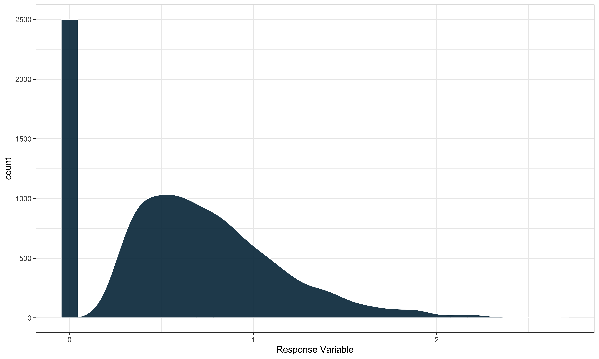

Overview
saeczi is an R package that implements a small area estimator that uses a two-stage modeling approach for zero-inflated response variables. In particular, we are working with variables that follow a semi-continuous distribution with a mixture of zeroes and positive continuously distributed values. An example can be seen below.

saeczi first fits a linear mixed model to the non-zero portion of the response and then a generalized linear mixed model with binomial response to classify the probability of zero for a given data point. In estimation these models are each applied to new data points and combined to compute a final prediction.
The package can also generate MSE estimates using a parametric bootstrap approach described in Chandra and Sud (2012) either in parallel or sequentially.
Installation
Install the latest CRAN release with:
install.packages("saeczi")You can also install the developmental version of saeczi from GitHub with:
# install.packages("pak")
pak::pkg_install("harvard-ufds/saeczi")Usage
We’ll use the internal package data to show an example of how to use saeczi. The two data sets contained within the package contain example forestry data collected by the Forestry Inventory and Analysis (FIA) research program.
-
saeczi::samp: Example FIA plot-level sample data for each county in Oregon. -
saeczi::pop: Example FIA pixel level population auxiliary data for each county in Oregon.
The main response variable included in samp is above ground live biomass and our small areas in this case are the counties in Oregon. To keep things simple we will use tree canopy cover (tcc16) and elevation (elev) as our predictors in both of the models. We can use saeczi to get estimates for the mean biomass in each county as well as the corresponding bootstrapped (B = 500) MSE estimate as follows.
library(saeczi)
data(pop)
data(samp)
result <- saeczi(samp_dat = samp,
pop_dat = pop,
lin_formula = DRYBIO_AG_TPA_live_ADJ ~ tcc16 + elev,
log_formula = DRYBIO_AG_TPA_live_ADJ ~ tcc16,
domain_level = "COUNTYFIPS",
mse_est = TRUE,
B = 1000L)Return
The function returns the following objects:
| Name | Description |
|---|---|
call |
The original function call |
res |
A data.frame containing the estimates |
lin_mod |
The linear model object of class merMod used to compute the estimates |
log_mod |
The logistic model object of class merMod used to compute the estimates |
As there are 36 total counties in Oregon, we will just look at the first few rows of the results:
result$res |> head()
#> COUNTYFIPS mse est
#> 1 41001 38.30647 14.57288
#> 2 41003 122.90662 103.33016
#> 3 41005 1069.30963 86.08616
#> 4 41007 4691.01214 78.79615
#> 5 41009 356.53805 73.98920
#> 6 41011 273.34697 90.44174Parallelization
saeczi supports parallelization through the future package to speed up the bootstrapping process, but requires a small amount of additional work on the part of the user. It is not enough just to specify parallel = TRUE in the function signature as a future::plan must also be specified.
Below is an example that uses multisession’ future resolution with 6 threads: